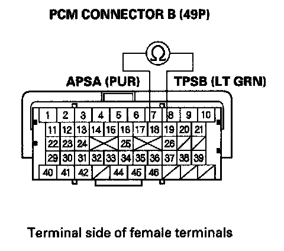

DTC Troubleshooting
DTC P2138: APP Sensor A/B (TP Sensor D/E) Incorrect Voltage CorrelationNOTE: Before you troubleshoot, record all freeze data and any on-board snapshot, and review the general troubleshooting information.
1. Turn the ignition switch ON (II).
2. Clear the DTC with HDS.
3. Press the accelerator pedal to the floor.
4. Check for Temporary DTCs or DTCs with the HDS.
Is DTC P2138 indicated?
YES - Go to step 5.
NO - Intermittent failure, the system is OK at this time. Check for poor connections or loose terminals at APP sensor and the PCM.
5. Check APP SENSOR A and APP SENSOR B in the DATA LIST with the HDS.
Are they the same voltage?
YES - Go to step 6.
NO - Go to step 11.
6. Turn the ignition switch OFF.
7. Jump the SCS line with the HDS.
8. Disconnect the APP sensor 6P connector.
9. Disconnect PCM connector A (49P).

10. Check for continuity between PCM connector terminals A18 and A19.
Is there continuity?
YES - Repair short in the wire between the PCM terminals (A18, A19), then go to step 13.
NO - Go to step 21.
11. Turn the ignition switch OFF.
12. Replace the accelerator pedal module.
13. Reconnect all connectors.
14. Turn the ignition switch ON (II).
15. Reset the PCM with the HDS.
16. Do the PCM idle learn procedure.
17. Turn the ignition switch OFF.
18. Turn the ignition switch ON (II).
19. Press the accelerator pedal to the floor.
20. Check for Temporary DTCs or DTCs with the HDS.
Is DTC P2138 indicated?
YES - Check for poor connections or loose terminals at the APP sensor and the PCM, then clean the throttle body, and go to step 1.
NO - Troubleshooting is complete. If any other Temporary DTCs or DTCs are indicated, go to the indicated DTCs troubleshooting.
21. Reconnect all connectors.
22. Update the PCM if it does not have the latest software, or substitute a known-good PCM.
23. Turn the ignition switch OFF.
24. Turn the ignition switch ON (II).
25. Press the accelerator pedal to the floor.
26. Check for Temporary DTCs or DTCs with the HDS.
Is DTC P2138 indicated?
YES - Check for poor connections or loose terminals at the APP sensor and the PCM. If the PCM was updated, substitute a known-good PCM, then recheck. If the PCM was substituted, go to step 1.
NO - If the PCM was updated, troubleshooting is complete. If the PCM was substituted, replace the original PCM. If any other Temporary DTCs or DTCs are indicated, go to the indicated DTCs troubleshooting.